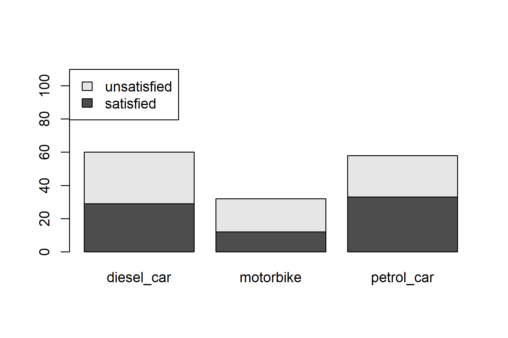

# Load the insurance dataset
insurance <- readRDS("Sharedfiles/ST201/data/insurance.rds")
ST201 · DATA ANALYSIS
Practice Questions Sheet 2
ST201 - Data Analysis
This tutorial introduces contingency tables and ways to analyse and visualise categorical data. Please attempt all questions before your tutorial You should work through the questions in a new R script.
For questions asking you to interpret a result, aim for one or two clear sentences. You should use the context of the insurance data when explaining your answers.
ImportantPlease complete this assignment before the tutorial on the week of 2nd November
Insurance data
We will use a dataset containing information of 150 customers of an insurance company. Within this dataset, these people were asked asked about their satisfaction with their motor insurance.
Each customer was classified according to:
satisfaction: satisfied or unsatisfied with their insurance covervehicle: What type of vehicle they own (petrol car, diesel car, or motorbike)
The dataset is available on the RStudio server in the ST201 data folder.
You can load it by opening a new R script and running the following code:
Once you have loaded the data, you can look at the first few observations using:
# Examine the first 6 rows of the insurance dataset
head(insurance)Exercise 1
- How many observations are in the dataset
- What are the two categorical variables?
- How many categories does each variable contain?
- What is the observational unit in this dataset?
Contingency tables
A contingency table allows us to examine the relationship between two categorical variables.
| Satisfaction | Diesel car | Motorbike | Petrol car |
|---|---|---|---|
| Satisfied | 29 | 12 | 33 |
| Unsatisfied | 31 | 20 | 25 |
Exercise 2
- Create a contingency table (similar to the above) of the insurance data.
TipHint
You can use either the table() or xtabs() function
- Use the
addmargins()function to add the marginal frequencies to the table. - How many customers
- own petrol cars?
- own diesel cars?
- own motorbikes?
- are satisfied with their insurance?
- are unsatisfied with their insurance?
- Which vehicle type has the largest number of customers in the sample?
Proportions
Frequencies can be useful. However, proportions can oftentimes make comparisons easier.
Exercise 3
- Turn the contingency table you made in exercise 2 into a proportions table.
- Again, use the
addmargins()function to add the marginal proportions to the table. - What proportion of customers were satisfied with their insurance?
- What proportion of customers owned a petrol car?
- Explain the difference between the proportion in the cell
- “petrol car and satisfied” and “marginal proportion satisfied”
Conditional distributions
Suppose we want to compare satisfaction within each vehicle type.
\[ P(\text{satisfaction} \mid \text{vehicle type}) \]
Exercise 4
- Update the proportion table from exercise 3 to now show the conditional proportions.
TipHint
# What goes in the blank?
prop.table(insurance_table, ___ = 1)- What proportion of petrol-car customers were satisfied?
- What proportion of diesel-car customers were satisfied?
- What proportion of motorbike customers were satisfied?
- Which vehicle type has the highest proportion of satisfied customers?
- Based on these conditional proportions, describe the relationship between vehicle type and satisfaction.
Visualising categorical data
A bar plot lets us compare the numbers of satisfied and unsatisfied customers across vehicle types.
# args.legend: Changes the legend position
# ylim: Changes the y-axis limits
barplot(
insurance_table,
legend = TRUE,
args.legend = list(x = "topleft"),
ylim = c(0, 110)
)
Exercise 5
- Instead of a stacked bar plot, modify the above code to create a side-by-side bar plot. You may also modify the
ylimargument to improve the resulting figure - Produce a stacked bar plot in which each bar represents 100% of the customers in that vehicle group.
TipHint
You will need to use the conditional proportions from Exercise 4.
Odds and odds ratios
The odds of an outcome are defined as
\[ \text{odds} = \frac{P(\text{outcome})} {1 - P(\text{outcome})} \]
Therefore, if 60% of a group are satisfied, then
\[ \frac{0.6}{1 - 0.6} = 1.5 \]
there are 1.5 satisfied customers for every 1 unsatisfied customer.
Exercise 6
- Calculate the odds of satisfaction for
- petrol-car customers
- diesel-car customers
- motorbike customers
- Calculate the odds ratio comparing petrol-car customers with diesel-car customers
- Interpret the odds ratio in the context of this study
\(\chi^2\) test
We now want to formally test whether vehicle type and satisfaction are independent. In order to do this, we will perform a Pearson’s \(\chi^2\) test.
Exercise 7
- State what your null and alternative hypotheses are.
- Write R code to perform a \(\chi^2\) test
- What is the value of the chi-squared test statistic?
- What are the degrees of freedom?
- What is the p-value?
- Using a 5% significance level, what decision would you make about the null hypothesis?
- Write a conclusion for the test in the context of insurance satisfaction.